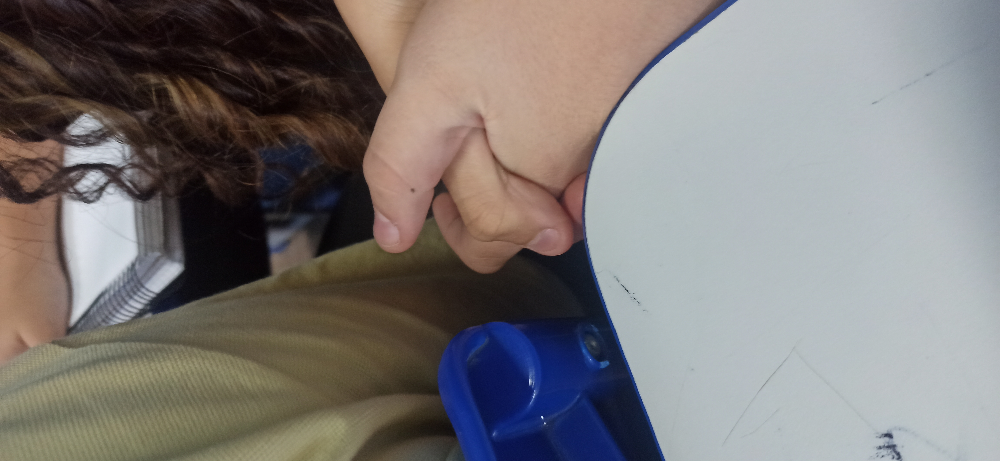
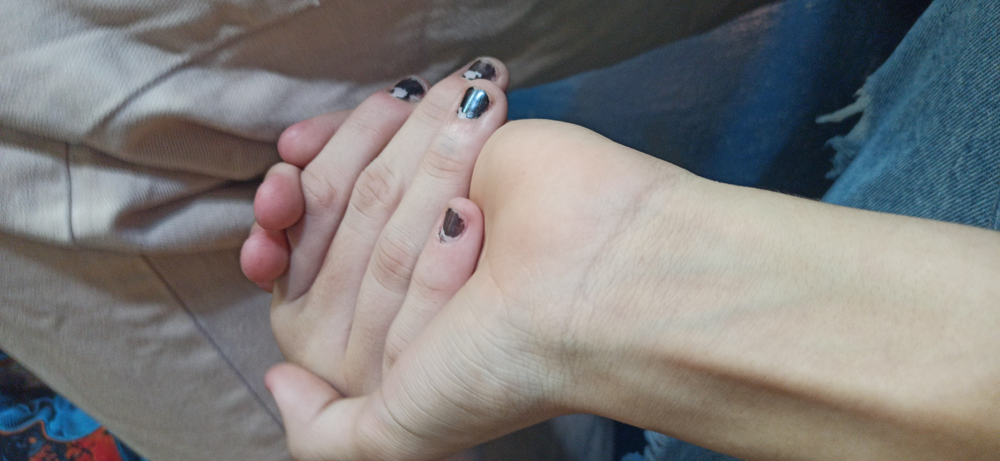
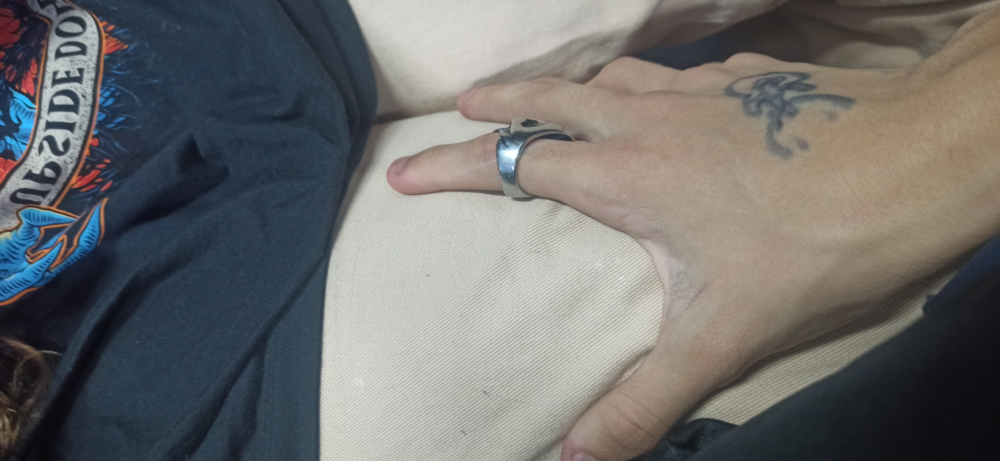
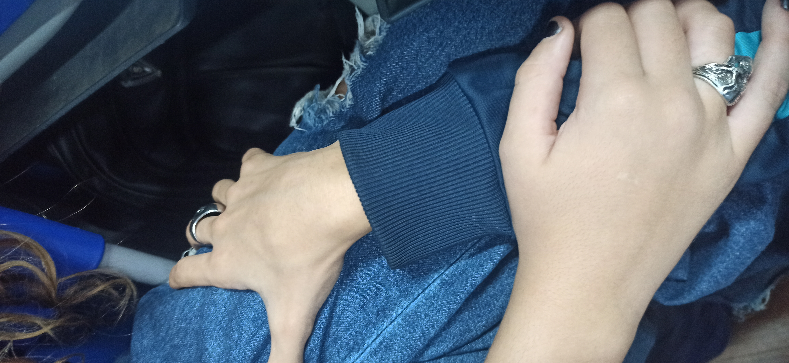

30/05
Nossa primeira vez de maos dadas

Lembro de quando segurei, comecei a suar todo, tremer e medo do professor ver e voce sair da minha vida;Me senti muito especial e mau sabia eu que daqui pra frente só melhoraria.
09/05
Primeira vez deitado ao seu ombro
 A primeira vez que eu deitei no seu ombro, me senti muito confortavel e especial.
A primeira vez que eu deitei no seu ombro, me senti muito confortavel e especial.
09/05
Sua vez segurando minha mao

A primeira vez que voce pegou na minha mao, nossa na hora que eu vi eu quasei tive um atque de felicidade e olho pro lado o Pietro comemorando kk.
09/05
Primeira vez segurando sua coxa

A primeira vez eu segurei sua coxa, foi incrivel a sensaçao te dar pegando em algo fofinho e gostoso, e a de voce se sentir confortavel e ter dado permissao comigo com a mao e cima, nossa foi incrivel.
nao temos fotos, so lembranças
Nesse dia, foi o dia em que mais eu precisei de voce ao meu lado, quando estive tendo minha crise eu so pensava em uma forma de resolver, essa forma era voce, entao so falei pra julia que eu precisava de voce, e voce foi me jaudar, e nesse momento percebi que estava totalmente apaixonado/gostando/ amando voce, e ver que voce conseguiu trazer um conforto que ninguem nunca troxe foi a melhor coisa da minha vida.
14/05
Nos juntos

Nesse dia eu tava meio mal por xarente e tals, e colocar minha mao na sua coxa e vc colocar a mao na minha, foi uma coisa que me curou dessa carencia
19/05
Nossa declaraçao
Noa tenho imagem, porem, esse dia ficou gravado na minha mente e provavelmente na sua tambem, nossa foi incrivel saber que vc gosta de min e talvez pra voce tbm. EU estava bem nervoso esse dia, ao ponto de me questionar se eu estava certo do que eu tava fazendo, mas no final de tudo, ta valendo a pena quebrar a barrera da vergonha. Nem divide o chocolate.